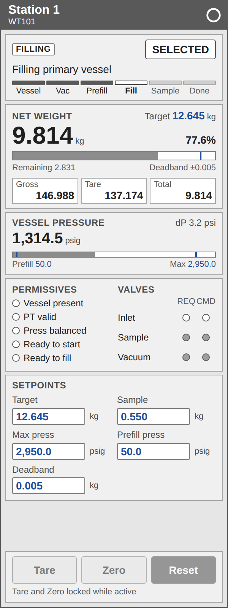

<figure class="card" id="Docks_Station"><div class="view" style="width:120px;height:320px"><div class="stage" style="width:300px;height:800px;transform:scale(0.4000)"><div class="hit" style="position:absolute;inset:0;pointer-events:none" title="click: open dynamic window"></div></div></div><figcaption><code>Docks/Station</code><br><b class="gap">GAP T_Station</b> &middot; dynamic window <code>dw_Station</code><br>existing dock view; planned: move to <code>Docks/Station</code>, resize 300 x 800 to 400 x 860 (decision 25)<br><i>render of the real view</i></figcaption></figure>